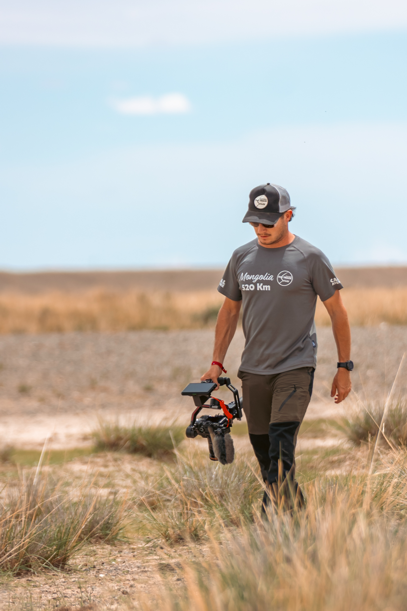
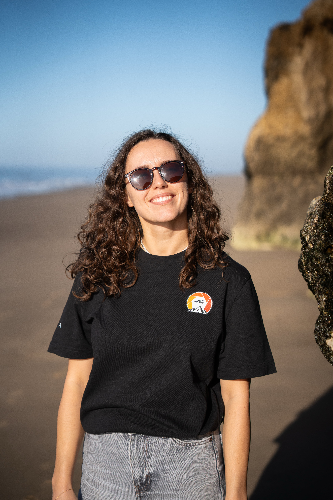

L'histoire derrière l'image
Salut, moi c'est Victor.Bienvenue dans mon univers.
Je suis vidéaste, réalisateur et pilote de drone, à l'origine de Digital Art Production. Depuis toujours, j'aime l'image, les voyages et les aventures qui nous emmènent hors de nos habitudes.
J'ai créé Digital Art Production avec l'envie de faire de cette passion mon métier : aller à la rencontre de personnes et de projets qui ont quelque chose à raconter, et leur donner vie à travers des images qui transmettent une émotion.
Passionné par le drone et la prise de vue aérienne, j'aime prendre de la hauteur pour découvrir les paysages sous un autre angle, jouer avec les perspectives et capturer des images que l'on ne pourrait pas obtenir depuis le sol. Du drone traditionnel au FPV, j'explore les différentes possibilités de ces technologies pour apporter une dimension cinématographique et immersive à mes réalisations.
Au fil des tournages, mon travail m'a conduit aux quatre coins du monde. J'y ai découvert des univers très différents, souvent exigeants, qui m'ont appris à m'adapter, à observer et à raconter ce qui se passe vraiment sur le terrain.
Aujourd'hui, qu'il s'agisse d'une aventure à l'autre bout du monde, d'un film pour une entreprise ou d'un événement près de chez nous, je garde la même approche : m'impliquer pleinement dans chaque projet et soigner autant l'histoire que les images.
L'aventure grandit
Moi, c'est Marjo.Deux regards, une même ambition.
Digital Art Production, c'est avant tout une aventure que Victor a construite au fil des années. Aujourd'hui, je suis heureuse de le rejoindre pour écrire ensemble la suite de cette histoire et apporter mon regard et mes compétences à nos projets.
Mon rôle est d'intervenir à chaque étape de la production : de la préparation à l'organisation logistique, en passant par les tournages et le montage. Cette complémentarité nous permet de travailler plus efficacement, de gagner en réactivité et de réduire les délais de livraison, sans jamais compromettre la qualité de nos réalisations.
Ce qui me plaît dans cette aventure, c'est de découvrir de nouveaux univers, de rencontrer des personnes et de contribuer à raconter leurs histoires. Ensemble, nous souhaitons offrir à chaque client un accompagnement humain et attentif, du premier échange jusqu'à la livraison du projet.
